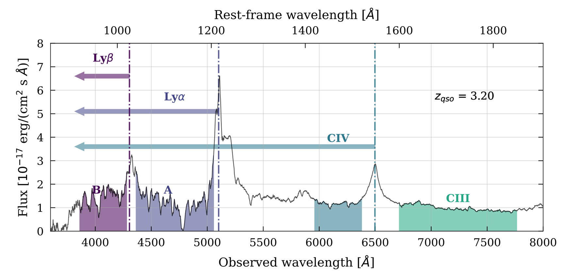

Lyman-α
The forest of absorption lines in front of distant quasars — DESI’s reach beyond redshift 2

Figure 2 from DESI DR2 Results I: Baryon Acoustic Oscillations from the Lyman-α Forest, M. Abdul Karim et al. (DESI Collaboration), Physical Review D 112, 083514 (2025).
Absorption by neutral hydrogen along the line of sight to distant quasars traces the intergalactic medium at redshifts beyond 2, and gives DESI its longest lever arm on the expansion history — the only probe reaching deep into the matter-dominated era.
This page covers the forest program itself: how a measurement is built, and the one-dimensional power spectrum. The forest's distance and growth results are grouped with the other tracers by method.
Lyman-α BAO →
The standard ruler at z ≈ 2.3, from DR1 and DR2, with the validation and catalog papers behind each.
Lyman-α Full Shape →
The Alcock-Paczyński measurement from the broadband — a 1% constraint, twice as tight as BAO from the same data.
Pipeline references →
How a forest measurement is built: imaging, target selection, classification, visual inspection, templates and absorber catalogs. Nine papers, in order.
1D Power Spectrum
A separate observable from the three-dimensional correlation functions: the power spectrum measured along individual lines of sight. P1D reaches much smaller scales, and constrains warm dark matter, the sum of the neutrino masses and the thermal state of the intergalactic medium.
Loading references…
![Spectrum of a quasar at redshift 2.94 from DESI survey validation. Flux is plotted against observed wavelength from 3500 to 6600 ångström, with rest-frame wavelength on the top axis. A blue shaded band marks the Lyman-α forest between the Lyman-β and Lyman-α emission lines, and two further shaded bands mark the side bands used to quantify contamination: SB 1 in orange between Lyman-α and Si IV, and SB 2 in green between Si IV and C IV. Emission lines Lyman-β, Lyman-α, N V, Si IV and C IV are labeled.](img/lya/p1d-quasar-sidebands.png)
Figure 1 from Optimal 1D Lyman-α Forest Power Spectrum Estimation III: DESI early data, N. G. Karaçaylı et al. (DESI Collaboration), MNRAS 528, 3941 (2024).